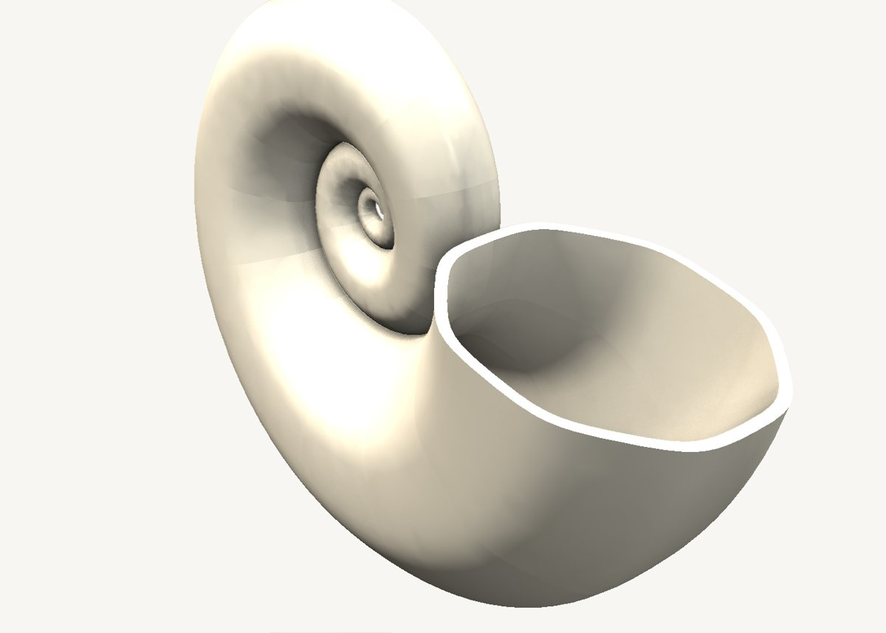
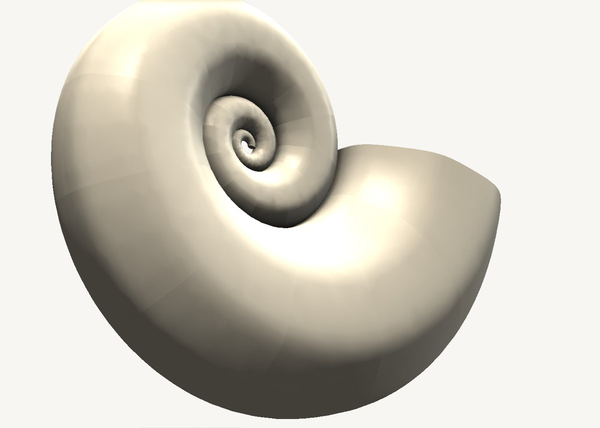

How to model a nautilus shell in SweeperCAD
A nautilus shell is one sweep. A logarithmic spiral for the spine, an oval for the profile, and a scale graph that is a straight line.
Download the model Get SweeperCAD (free)
2 objects · 100 × 37 × 77 mm · free to use, no credit needed (CC0)



How it is built
- A spiral spineThe spine is a logarithmic spiral drawn in the spine graph - the curve the real shell grows along.
- A straight scale graphIn SweeperCAD the scale graph's x is the distance travelled along the spine. Along a log spiral that distance grows with the radius, so a tube that stays in proportion to the spiral is simply a straight line of two points. One of the neatest results the scale graph gives you.
- The chamber is a second sweepThe cavity is the same sweep with a smaller oval, subtracted. Two objects, one combine - and every curve still editable.
Open it and pull on it
Download the model, open it with SweeperCAD and it lands on your asset shelf. Place it, then select any part: its profile, spine and scale graph are right there to drag, and everything downstream rebuilds - fillets included. Every curve stays editable; nothing is ever baked.
More examples
Teapot Mecha arm Potted plant Robot Elliptic-wing fighter · the whole library · first-objects tutorial